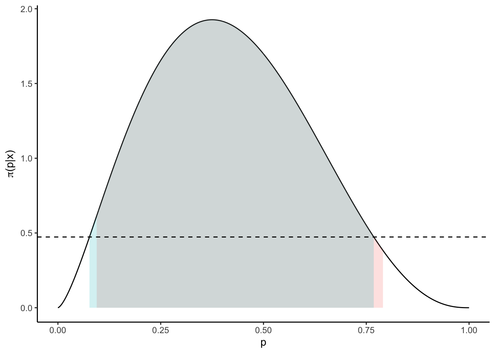

This document provides an overview on MCMC credible interval estimation. It is intended to give a broad overview on different approaches and underlying principles. It is based on Eberly & Casella (2003): Estimating Bayesian credible intervals and Chen (2000): Monte Carlo Methods in Bayesian Computation, Chapter 7.
In Bayesian inference, an analogon of frequentist confidence sets is given by credible sets. While the data is the realization of the random process in the former, the latter considers the underlying parameter to be random, and the data fixed.
Formally, let \(X\sim f(\;\cdot\;|\theta)\) a sample from a distribution dependent on \(\theta\in\Theta\), and \(\theta\sim\pi\). For any \(\alpha\in(0,1)\), a level \(1-\alpha\) credible set for \(\theta\) is any \(C(x)\in\mathcal{B}(\Theta)\) with \[\begin{equation*} P_{\theta|x}\{\theta\in C(x)\} = \int_{C(x)}\pi(\theta|x)\;d\theta \geq 1- \alpha. \end{equation*}\] A level \(1-\alpha\) highest posteriori density (HPD) credible set \(C(x)\) for \(\theta\) is defined by \[\begin{equation*} C(x) = \{ \theta\;|\; \pi(\theta|x) \geq c_\alpha\}, \end{equation*}\] where \(c_\alpha\) is the largest constant such that \(P_{\theta|x}\{\theta\in C(x)\} \geq 1-\alpha\).
These definitions are intuitively understood: While a posterior exhibits many credible sets, most of them are not useful since they include areas in which the posterior has little mass. Instead, it is a desirable property to first include those areas in which most mass is present until the desired level is attained. This is the essence of the HPD credible set.
Consider the Beta-Binomial hierarchy given by \[\begin{align*} X|p &\sim B(n,p),\\ p &\sim Beta(a,b). \end{align*}\] It is easy to see that \(p | x \sim Beta( a + x, b + n - x)\).
For some selected parameters, a naive 95%-credible interval can be readily calculated:
# set prior and likelihood parameters
alpha <- 0.05
n <- 5
a <- b <- 0.5
x <- 2
# set posterior parameters
a.star <- a + x
b.star <- b + n - x
# the naive credible interval is given by
CI1 <- qbeta(c(alpha/2, 1 - alpha/2), a.star, b.star)In order to compute the HPD credible interval, an optimization problem which is equivalent to the definition above has to be solved.
# the HPD credible interval is the minimizer or
Q <- function(arg, a0 = alpha, a = a.star, b = b.star) {
abs(dbeta(arg[2], a, b) - dbeta(arg[1], a, b)) +
abs(pbeta(arg[2], a, b) - pbeta(arg[1], a, b) - (1 - a0))
}
CI2 = optim(c(0.2,0.7), Q,
lower = c(0,0),
upper = c(1,1),
method = "L-BFGS-B")$parIn this particular instance, we may somewhat trust the integrate-function and compare both intervals.
# both sets yield the same coverage
integrate("dbeta", CI1[1], CI1[2], shape1 = a.star, shape2 = b.star)## 0.95 with absolute error < 7.1e-11integrate("dbeta", CI2[1], CI2[2], shape1 = a.star, shape2 = b.star)## 0.9500096 with absolute error < 3.8e-10# but not the same length
diff(CI1)## [1] 0.696193diff(CI2)## [1] 0.6914237While their coverage probabilities coincide, their positions - and thus their lengths - do not. This is visualized by plotting the sets.
# plot
require("ggplot2")
require("latex2exp")
p <- seq(0, 1, length = 1000)
f <- function(p) dbeta(p, a.star, b.star) #posterior
ggplot() + theme_classic() +
labs(y = unname(TeX("$\\pi(p|x)$")), x = "p") +
geom_line(aes(x = p, y = f(p))) +
stat_function(fun = f,
geom = "area",
xlim = CI1, fill = "#f8766d", alpha = 0.2) +
stat_function(fun = f,
geom = "area",
xlim = CI2, fill = "#00bfc4", alpha = 0.2) +
geom_hline(yintercept = f(CI2[1]), linetype = "dashed")
The naive credible set (red) is narrowly larger than the HPD (blue) set. Since it misses some mass-rich area on the left of the mode, it has to make up for it by including more areas at the right tail of the target density. The more skewed the posterior to the right, the more pronounced this effect will be. On the contrary, since the posterior \(f\) is continuous, the HPD set \([l,u]\), \(l,u>0\) has the property that \(f(l) = f(u)\). This is indicated by the dashed line.
Because in Bayesian computation, usually no analytic representation of the posterior is available. The HPD credible interval can be estimated without the explicit knowledge of the posterior by using the MCMC sample.
An (artificial) example is given as follows. First, lets generate a sample that coincides with the values of the Beta-Binomial hierarchy above.
# generate data
N <- 200
n <- 5
p <- 0.396
set.seed(123)
x <- rbinom(N, n, p) #sampleWe generate our Markov chain by sampling from the posterior directly. In practice, the MCMC sample would be generated by full conditionals.
# generate MCMC sample
M <- 1e5 #length of Markov chain
theta <- rbeta(M, a.star, b.star) #MCMC sampleThe Chen-Shao algorithm chooses the shortest estimated credible sets amongst all order statistics based credible sets that meet nominal coverage.
# chen shao
theta <- sort(theta) # order the MCMC sample
M.cand <- round(M*(1 - alpha)) # number of candidate HPDs
C <- matrix(NA, nrow = (M - M.cand), ncol = 2)
for (i in 1:(M - M.cand)) C[i,1:2] = c(theta[i], theta[i + M.cand])
diffC <- apply(C, 1, "diff") #lengths of candidate intervals
idx <- which.min(diffC)
CI3 <- C[idx,] # Chen-Shao HPD Now, we compare the obtained Chen-Shao HPD credible set with the analytical credible sets computed earlier.
require("tidyverse")
tibble(type = c("Simple", "Optim", "Chen-Shao"),
lower = c(CI1[1], CI2[1], CI3[1]),
upper = c(CI1[2], CI2[2], CI3[2]),
diff = c(diff(CI1), diff(CI2), diff(CI3)))## # A tibble: 3 x 4
## type lower upper diff
## <chr> <dbl> <dbl> <dbl>
## 1 Simple 0.0944 0.791 0.696
## 2 Optim 0.0768 0.768 0.691
## 3 Chen-Shao 0.0744 0.766 0.692Although the Chen-Shao set depends only the MCMC sample, the estimated credible interval coincides with the analytical HPD credible set. It is important to emphasize that it is usually not possible to obtain the latter via solving the optimization problem above, since the analytic representation of the posterior is often not available. In such cases, the Chen-Shao algorithm offers a simple way to obtaining HPD credible intervals.
So why bothering with simple (non-HPD) credible sets in the first place? Because, if the underlying posterior is not too skewed, the ordinary credible interval is close to the HPD set. Moreover, more robust estimation techniques are available for simple credible sets of the form \[\begin{equation*} [\theta_{\alpha/2}, \theta_{1-\alpha/2}], \end{equation*}\] with \(\Pi(\theta_{\alpha/2}|x) = \alpha/2\) and \(\Pi(\theta_{1-\alpha/2}|x) = 1-\alpha/2\). A collection of such is given e.g. in Eberly & Casella. Implemented versions thereof are given in the example XYZ.